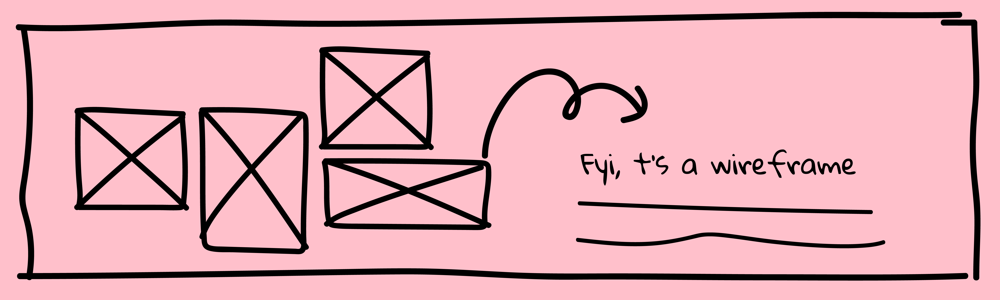

Webpage & Wireframe
Webpage & Wireframe
Choose and study a system, convention, or trend of the web and subvert it.
Determine an approach to illustrate your findings.
Design

Concept
A lot of designers create wireframes for websites before constructing it. I find the contrast between how rough (sometimes even sloppy) the wireframes are versus how clean and neat the actual product becomes very intriguing. Being inspired by that, my concept is to build a "website for wireframes" in contrast to the norm of creating wirframes for websites.